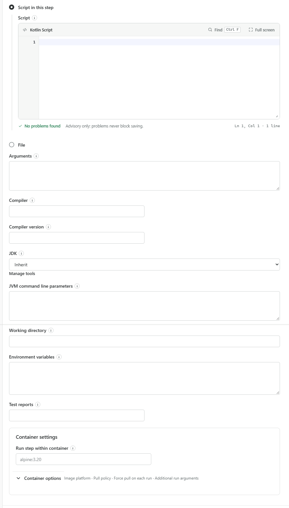

Kotlin Script
Runs a Kotlin script, typed into the step or from a .kts file, with kotlinc -script.
When to use it
Use it when your build tools are written in Kotlin or the JVM suits you better than shell. The agent needs the Kotlin compiler and a Java runtime.
How to set it up
- Open the build configuration and click Settings › Build Steps.
- Click Add build step. Type
Kotlin Scriptin Filter step types if you like, then click the Kotlin Script tile (group Build tools). - Type a Step name, for example
List platforms. - Fill in the fields described below.
- Optional: set Execute step, Conditions and Retry on failure. See The steps list and the step editor.
- Click Save.

Every field
| Field | What it does | Default | Example |
|---|---|---|---|
| Script in this step / File | Choose one. Script is the Kotlin text in a code editor. Script file is a .kts file relative to the working directory. | Script in this step | Build/tools.kts |
| Arguments | One argument per line. Each line stays one argument, whatever it holds. Pass a secret through the environment. | Empty | Shipping |
| Compiler | Path of kotlinc. Empty takes kotlinc from the agent's PATH. | Empty | C:\kotlinc\bin\kotlinc.bat |
| Compiler version | Such as 2.1 or 2.1.10. The build configuration then asks for an agent whose kotlinc reports this version. Ignored when a compiler path is set. | Empty | 2.1 |
| JDK | Inherit uses the JDK of the build configuration, or the java of the agent. A JDK from Settings › Tools sets JAVA_HOME for this step. Not available in a container: the image brings its own Java. | Inherit | JDK 21 |
| JVM command line parameters | One parameter per line, such as -Xmx2g. They are added to the variable the tool reads. A parameter cannot hold a space or quote. Do not put a secret here. | Empty | -Xmx2g |
| Working directory, Environment variables, Test reports, Run step within container | The same in every runner. See Fields every runner has. |
A worked example
Print the platform list for the matrix. Step name List platforms, Script:
val platforms = listOf("Win64", "PS5", "XboxSeriesX")
println("Building " + platforms.joinToString())What you see when it runs
The console shows the kotlinc -script command after a $ and then the output Building Win64, PS5, XboxSeriesX.
Problems and fixes
| Problem | What to do |
|---|---|
| The kotlinc command was not found on this agent | Install the Kotlin compiler or put kotlinc on the PATH. |
| A JVM parameter holds a space, quote or one of … | Write one parameter per line with no spaces. |
| A JDK of the Tools configuration is on the agent and cannot be used inside a container | Set the JDK to Inherit. |